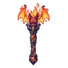
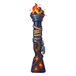

ค้างคาวเปลวไฟ
มอนธาตุไฟ Lv 66–95
เจอที่
| แมพ | โซน | Lv | ภูมิภาค |
|---|---|---|---|
| ภูเขาไฟหลับ | สุสานมังกร | 70–80 | แดนใต้สีแดง |
| ปล่องภูเขาไฟ ชั้น 1 | 80–85 | แดนใต้สีแดง | |
| ปล่องภูเขาไฟ ชั้น 2 · ถ้ำมังกร | 90–95 | แดนใต้สีแดง | |
| ลานหินออบซิเดียน | 66–77 | แดนใต้สีแดง | |
| ปากปล่องควันดำ | 66–77 | แดนใต้สีแดง | |
| หอรากมืด (Dark Root) | เส้นเลือดถ่านไฟ | 33–42 | |
| หอดาวร่วง | ชั้นหอดาวร่วง | 89–99 |
ค่าสถานะตามเลเวล
| Lv | HP | ATK | DEF | MDEF | EXP | Job |
|---|---|---|---|---|---|---|
| 66 | 19,028 | 130–196 | 16 | 16 | 79 | 59 |
| 80 | 32,933 | 165–247 | 19 | 19 | 95 | 71 |
| 95 | 54,256 | 211–316 | 23 | 23 | 111 | 83 |
ตีด้วยธาตุไหนดี
แรงขึ้น: น้ำ ×1.5 พิษ ×1.25
เบาลง: ดิน ×0.5 ไฟ ×0.25
วัตถุดิบที่ดรอป
| ของ | โอกาส | |
|---|---|---|
| ปีกค้างคาวเปลวไฟ | 55% | 1 ชิ้น (15% ได้ 2) |
อุปกรณ์ที่ดรอป (8)
| ของ | โอกาส |
|---|---|
| 0.25% | |
| 0.25% | |
| เกราะแสงเหนือ (เกราะอก) | 0.15% |
| เกราะแสงเหนือ (สนับขา + รองเท้าเกราะ) | 0.15% |
| 0.12% | |
 คบเพลิงค้างคาวเปลวไฟ | 0.12% |
 ลูกซองกองไฟ | 0.06% |
| เกราะแสงเหนือ (ต่างหูแสงเหนือ) | 0.05% |
สกิล
หลบ (Lv 25+) · หลบ (Lv 60+) · วาร์ป (Lv 60+)